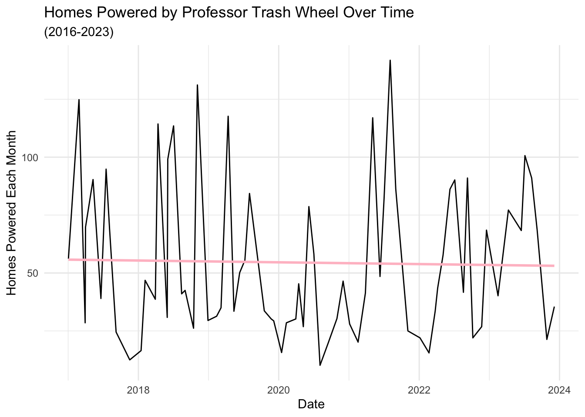
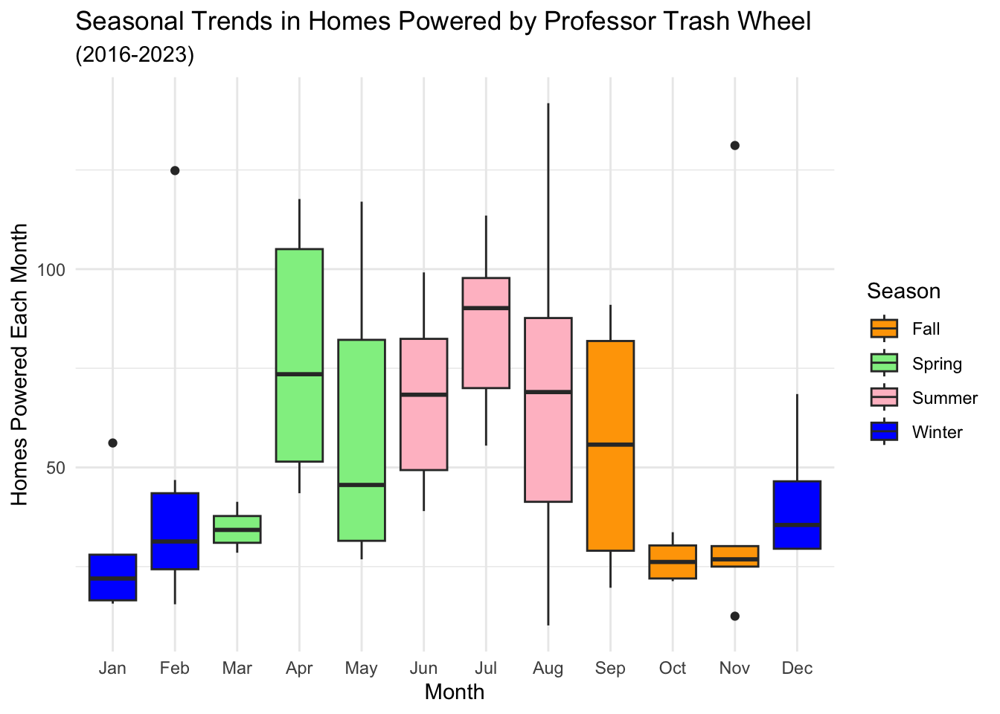
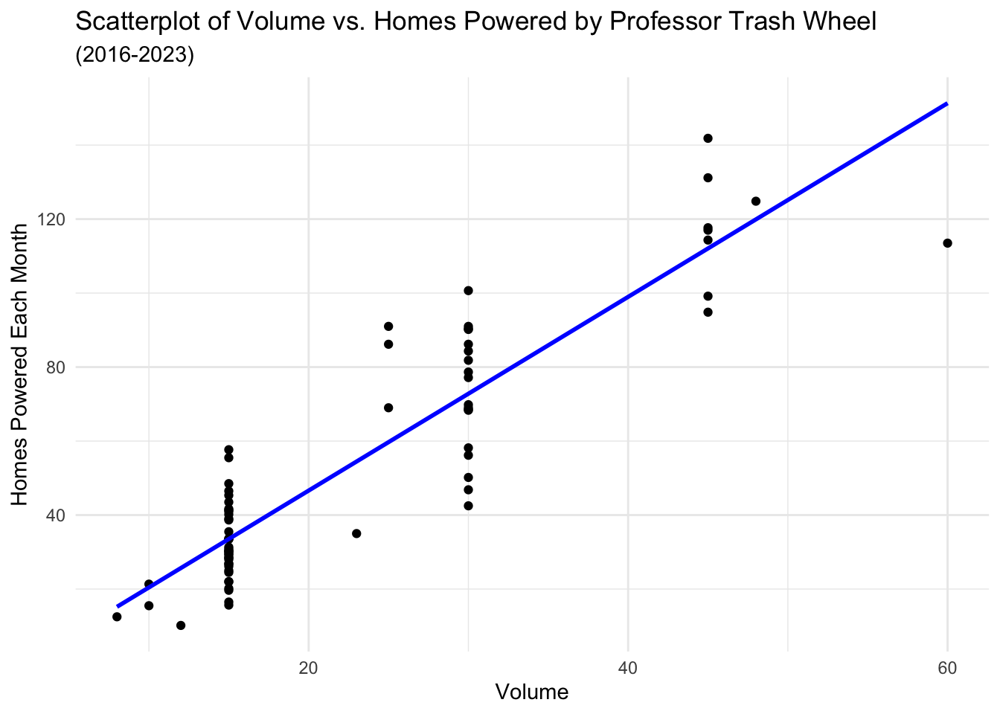

| Variable | Description |
|---|---|
| Dumpster | Identifier for the dumpster |
| Month | Month of data collection |
| Year | Year of data collection |
| Date | Date of data collection |
| Weight | Weight of waste in tons |
| Volume | Volume of waste in cubic yards |
| Plastic Bottles | Count of plastic bottles |
| Polystyrene | Count of polystyrene items |
| Cigarettes | Count of cigarette butts |
| Glass Bottles | Count of glass bottles |
| Plastic Bags | Count of plastic bags |
| Wrappers | Count of wrappers |
| Homes Powered | Estimated number of homes powered |
Example Analysis

Introduction
In 2014, the city of Baltimore created the first trash interceptor, named Mr. Trash Wheel, to clean up pollution in its waterways (Mr. Trash Wheel 2024). The key idea is that the semi-automatic interceptor collects pollutants and prevents them from migrating into the Chesapeake Bay. The trash are incinerated and then converted into electricity, which are used to power homes in Maryland. In the last decade, over a million pounds of debris have been collected.
In its success, the Mr. Trash Wheel family has been expanding. The Inner Harbor currently hosts four trash wheels: Mr. Trash Wheel (2014), Professor Trash Wheel (2016), Captain Trash Wheel (2018), and Gwynnda the Good Wheel of the West (2021). This analysis will focus on Professor Trash Wheel. She is acclaimed as “the brainy and beautiful wheel residing in Harris Creek in the Canton neighborhood of Baltimore city”. The intended audience for this analysis is residents of Baltimore and anyone who is interested in the environmental impact of the Mr. Trash Wheel initiatives.
Activity
I took the Trash Wheel personality test and was found to relate most to Professor Trash Wheel, inspiring my choice for this analysis. I encourage you to take the test yourself!
Fun Fact!
Professor Trash Wheel is a champion for women in STEM and likes Beyoncé, Eleanor Roosevelt, and sea otters. She dislikes low tides, strong winds, and the patriarchy. We also have the same birthday! You can also meet the other trash wheels here.
Dataset
The public datasets for the Mr. Trash Wheel family are provided by the Waterfront Partnership of Baltimore in the form of a Google spreadsheet (“Waterfront Partner Initiative” 2024) (Initiative 2024). These are updated on at least a monthly basis and have almost no missing data. The variables are fairly self-explanatory, although a data dictionary provided here for completeness. It is worth noting that the Homes Powered variable is calculated under the assumption that an average household will use 30 kilowatts per day of electricity.
Data Processing
First, we removed data for the current year of 2024, as they currently have missing values for the Homes Powered variable. We also removed the last row of the dataset, which had the calculated totals of relevant variables since the construction of Professor Trash Wheel. Notably, the data collection of Professor Trash Wheel usually occurs one to three times per month but does not appear to be conducted on a consistent timetable. Therefore, for this analysis, we use aggregated monthly data which combines all counts and totals for the dumpsters collected for each given month and year.
Code
df = df_orig %>% rename_with(~ c("dumpster", "month", "year", "date", "weight",
"volume", "plastic_bottles", "polystyrene", "cigs",
"glass_bottles", "plastic_bags", "wrappers",
"homes_powered"), everything()) %>%
filter(!is.na(homes_powered)) %>%
slice(-n()) %>%
separate(date, sep="-", into = c("year", "month", "day"), remove = FALSE) %>%
mutate_if(is.character, as.numeric) %>%
group_by(year, month) %>%
mutate(across(c(volume, plastic_bottles, polystyrene, cigs,
glass_bottles, plastic_bags, wrappers, homes_powered), ~ sum(.x, na.rm = TRUE), .names = "monthly_total_{col}")) %>%
filter(row_number() == 1) %>%
select(-c(5:14)) %>%
ungroup() %>% mutate(time = as.numeric(as.Date(paste(year, month, "01", sep = "-"))) / 1000)Exploratory Analysis
Code
#
ggplot(df, aes(x = date, y = monthly_total_homes_powered)) +
geom_line() +
labs(title = "Homes Powered by Professor Trash Wheel Over Time", x = "Date", y = "Homes Powered Each Month", subtitle = "(2016-2023)") +
geom_smooth(method = "lm", se = FALSE, color = "pink") +
theme_minimal()

The time series plot of the number of homes powered by Professor Trash Wheel from 2016 to 2023 reveals significant variability over time, with an overall slight decline in the number of homes powered. The variability within each year indicates that seasonal trends may be present.
Code
df = df %>%
mutate(season = case_when(
month %in% c(12, 1, 2) ~ "Winter",
month %in% c(3, 4, 5) ~ "Spring",
month %in% c(6, 7, 8) ~ "Summer",
month %in% c(9, 10, 11) ~ "Fall"
))
season_colors = c("Winter" = "blue", "Spring" = "lightgreen", "Summer" = "pink", "Fall" = "orange")
month_labels = c("Jan", "Feb", "Mar", "Apr", "May", "Jun", "Jul", "Aug", "Sep", "Oct", "Nov", "Dec")
ggplot(df, aes(x = factor(month, levels = 1:12, labels = month_labels), y = monthly_total_homes_powered, fill = season)) +
geom_boxplot() +
scale_fill_manual(values = season_colors) +
labs(x = "Month", y = "Homes Powered Each Month", fill = "Season", title = "Seasonal Trends in Homes Powered by Professor Trash Wheel", subtitle = "(2016-2023)") +
theme_minimal()

This boxplot shows the distribution of homes powered each month by Professor Trash Wheel, with months categorized by season (Winter, Spring, Summer, and Fall). There is notable variability across seasons, with higher medians and greater variability in spring and summer months compared to fall and winter, where the number of homes powered tends to be lower and more consistent.
Code
ggplot(df, aes(x = monthly_total_volume, y = monthly_total_homes_powered)) +
geom_point() +
geom_smooth(method = "lm", se = FALSE, color = "blue") +
labs(title = "Scatterplot of Volume vs. Homes Powered by Professor Trash Wheel", subtitle = "(2016-2023)", x = "Volume", y = "Homes Powered Each Month") +
theme_minimal()

Since the electricity used to power the homes each month is the result of incinerating of the collected waste, we may hypothesize that the volume, weight, or the type of waste is influencial in electricity generation. In this analysis, I choose to investigate volume. The scatterplot of Volume vs. Homes Powered with a fitted linear regression line shows a positive relationship, suggesting that as volume increases, the number of homes powered also tends to increase. It is also worth noting that Professor Trash Wheel is often emptied when she reaches capacity, which is at 15 tons. However, this can occur multiple times each month, hence clustering of volume at 15, 30, and 45 tons.
Note
dplyr: rename_with(), filter(), slice(), separate(), mutate_if), group_by(), mutate(), across(), select(), ungroup()
ggplot2: geom_line(), geom_boxplot(), geom_point(), geom_smooth()
Research Question
Are there seasonal (monthly) trends in the number of homes powered by Professor Trash Wheel, after controlling for the volume of waste collected?

Methods
First, we fit a linear regression model using time to model monthly homes powered, while controlling for the volume of the waste collected that month. We also fit a model using both time, month, and volume to model the homes powered each month.
Since we identified that there may be a seasonal trend in the data, we also fit two generalized additive models (GAM) using the mgcv R package. The first assumes that there are uncorrelated errors and the second model assumes an AR1 correlation structure. We specify a spline to the month and time variables only. For both models, the dimensions of the basis used for the spline are specified to be 12 for month (as this is the number of unique values). We also specify the basis type to be a cyclic cubic spline, which means there is no discontinuity between January and December. For the model allowing correlated errors, we fit an autoregressive moving-average process to the residuals of order 1. The methods used here were adapted from a tutorial for GAM for seasonal data (Simpson 2014). To compare these methods, we use Adjusted \(R^2\) values.
Analysis
The results for the first linear regression model, using time and monthly total volume to model homes powered, show that both predictors are statistically significant with a positive relationship to our outcome.
Code
lm_fit_1 = lm(monthly_total_homes_powered ~ monthly_total_volume + time, df)
summary(lm_fit_1)
Call:
lm(formula = monthly_total_homes_powered ~ monthly_total_volume +
time, data = df)
Residuals:
Min 1Q Median 3Q Max
-36.270 -9.746 0.127 8.831 25.099
Coefficients:
Estimate Std. Error t value Pr(>|t|)
(Intercept) -145.0716 40.8979 -3.547 0.000705 ***
monthly_total_volume 2.7119 0.1399 19.388 < 2e-16 ***
time 7.4592 2.1814 3.419 0.001057 **
---
Signif. codes: 0 '***' 0.001 '**' 0.01 '*' 0.05 '.' 0.1 ' ' 1
Residual standard error: 13.25 on 69 degrees of freedom
Multiple R-squared: 0.845, Adjusted R-squared: 0.8405
F-statistic: 188 on 2 and 69 DF, p-value: < 2.2e-16After running the second model, which includes the month, we see that adjusting for such a seasonal trend does not improve our model. This is shown by the adjusted \(R^2\) values being nearly identical (~84%) and the month variable being not statistically significant with the other variables in the model. It is interesting to note that the slightly decreasing trend present in Figure 1 is reversed (indicated by the positive slope here) when we control for volume.
Code
lm_fit_2 = lm(monthly_total_homes_powered ~ monthly_total_volume + time + month, df)
summary(lm_fit_2)
Call:
lm(formula = monthly_total_homes_powered ~ monthly_total_volume +
time + month, data = df)
Residuals:
Min 1Q Median 3Q Max
-36.621 -8.853 0.169 8.502 25.192
Coefficients:
Estimate Std. Error t value Pr(>|t|)
(Intercept) -141.6753 41.4560 -3.417 0.00107 **
monthly_total_volume 2.7109 0.1405 19.292 < 2e-16 ***
time 7.1731 2.2405 3.202 0.00208 **
month 0.2975 0.4854 0.613 0.54191
---
Signif. codes: 0 '***' 0.001 '**' 0.01 '*' 0.05 '.' 0.1 ' ' 1
Residual standard error: 13.31 on 68 degrees of freedom
Multiple R-squared: 0.8458, Adjusted R-squared: 0.839
F-statistic: 124.3 on 3 and 68 DF, p-value: < 2.2e-16Next, we fit the GAM with uncorrelated errors. This model yields a statistically significant parametric coefficient for volume (with a positive relationship with homes powered) and a statistically significant smooth term for time. In the GAM model results, the smooth term for month is close to statistical significance but is not at a p-value of 0.063. The adjusted \(R^2\) is 84.9% for this model.
Code
m = gamm(monthly_total_homes_powered ~ s(month, bs = "cc", k = 12) + monthly_total_volume + s(time), data = df)
summary(m$gam)
Family: gaussian
Link function: identity
Formula:
monthly_total_homes_powered ~ s(month, bs = "cc", k = 12) + monthly_total_volume +
s(time)
Parametric coefficients:
Estimate Std. Error t value Pr(>|t|)
(Intercept) -5.9005 3.6121 -1.634 0.107
monthly_total_volume 2.6248 0.1428 18.387 <2e-16 ***
---
Signif. codes: 0 '***' 0.001 '**' 0.01 '*' 0.05 '.' 0.1 ' ' 1
Approximate significance of smooth terms:
edf Ref.df F p-value
s(month) 1.578 10 0.427 0.06365 .
s(time) 1.000 1 11.758 0.00104 **
---
Signif. codes: 0 '***' 0.001 '**' 0.01 '*' 0.05 '.' 0.1 ' ' 1
R-sq.(adj) = 0.849
Scale est. = 158.71 n = 72We can see the visual relationships between the original time and month variables with their spline variables. Notably, for month we see the smoothed version of the relationship we elucidated in Figure 2.
Code
layout(matrix(1:2, ncol = 2))
plot(m$gam, scale = 0)
Code
layout(1)We fit our final model as a GAM with the AR1 specification. This yields extremely similar results for the coefficients and statistical significance, and adjusted \(R^2\) compared to the uncorrelated model.
Code
ctrl = list(niterEM = 0, msVerbose = FALSE, optimMethod="L-BFGS-B")
## AR(1)
m1 = gamm(monthly_total_homes_powered ~ s(month, bs = "cc", k = 12) + monthly_total_volume + s(time), data = df, correlation = corARMA(form = ~ 1| year, p = 1), control = ctrl)
summary(m1$gam)
Family: gaussian
Link function: identity
Formula:
monthly_total_homes_powered ~ s(month, bs = "cc", k = 12) + monthly_total_volume +
s(time)
Parametric coefficients:
Estimate Std. Error t value Pr(>|t|)
(Intercept) -5.5808 3.6091 -1.546 0.127
monthly_total_volume 2.6094 0.1407 18.551 <2e-16 ***
---
Signif. codes: 0 '***' 0.001 '**' 0.01 '*' 0.05 '.' 0.1 ' ' 1
Approximate significance of smooth terms:
edf Ref.df F p-value
s(month) 1.53 10 0.393 0.07297 .
s(time) 1.00 1 10.159 0.00218 **
---
Signif. codes: 0 '***' 0.001 '**' 0.01 '*' 0.05 '.' 0.1 ' ' 1
R-sq.(adj) = 0.849
Scale est. = 158.98 n = 72Code
anova(m$lme, m1$lme) Model df AIC BIC logLik Test L.Ratio p-value
m$lme 1 6 583.6590 597.3190 -285.8295
m1$lme 2 7 585.2809 601.2176 -285.6405 1 vs 2 0.3780886 0.5386The Likelihood Ratio Test result does not reach statistical significance, which indicates that the simpler GAM model best fits the data. Comparing the four models, we have that the GAM with uncorrelated errors explains the most variation in the homes powered each month, specifically 84.9%.
Conclusion
The analysis of the number of homes powered by Professor Trash Wheel over time reveals several important insights into the relationship between seasonal trends, waste volume, and electricity generation. While the linear regression models showed that both time and waste volume significantly contributed to the number of homes powered, adjusting for seasonal effects did not improve the model’s fit, suggesting that volume is the primary driver of electricity generation.
Generalized Additive Models (GAM), including both uncorrelated and autoregressive error structures, further confirmed the significance of waste volume and highlighted a mild seasonal pattern, though the month variable did not reach statistical significance in the presence of volume. The results suggest that while seasonal fluctuations may exist, the volume of waste collected remains the most influential factor in determining the number of homes powered by Professor Trash Wheel, with both models explaining around 85% of the variation in the data.
Future research could expand on this by exploring how other factors — such as waste composition, weight, and long-term trends in pollution — contribute to energy production and inform strategies for waste reduction, in relation to the Mr. Trash Wheel family. Such research is crucial for understanding the environmental needs of Baltimore, raising public awareness, and providing evidence to support policies aimed at reducing waste and enhancing sustainability.
References
Initiative, Healthy Harbor Waterfront Partner. 2024. Trash Wheel Collection Data. https://docs.google.com/spreadsheets/d/1b8Lbe-z3PNb3H8nSsSjrwK2B0ReAblL2/edit?gid=1143432795#gid=1143432795.
Mr. Trash Wheel. 2024. “Mr. Trash Wheel.” https://www.mrtrashwheel.com.
Simpson, Gavin. 2014. “Modelling Seasonal Data with GAM.” https://fromthebottomoftheheap.net/2014/05/09/modelling-seasonal-data-with-gam/.
“Waterfront Partner Initiative.” 2024. https://www.mrtrashwheel.com/trash-interception.